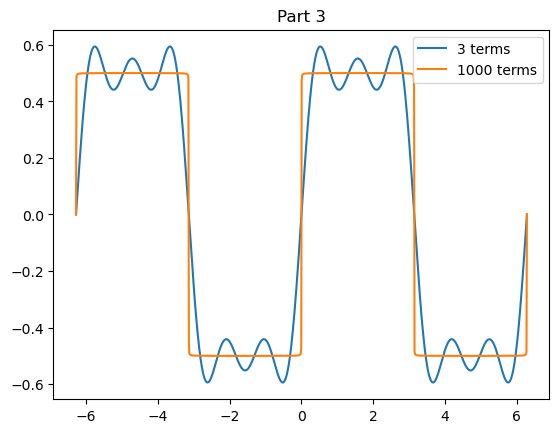

\[\begin{align*}
a_n &= \frac{2}{T} \int_{-T/2}^{T/2} f(t) \cos n \omega_0 t dt\\
b_n &= \frac{2}{T} \int_{-T/2}^{T/2} f(t) \sin n \omega_0 t dt
\end{align*}\]
where \(\frac{1}{2} a_0\) is the average value of \(f(t)\).
The method for evaluating the coefficients is known as “Fourier’s trick”. Start with the Fourier \(\sin\) series. Multiply both sides of the equation by \(\sin(m \omega_o t)\) and integrate the periodic function over one full period. i.e.,
\[\begin{equation*}
\int_{-T/2}^{T/2} f(t) \sin( m \omega_o t) dt = \int_{-T/2}^{T/2}\sum_{n=1}^\infty
b_n \sin( n \omega_o t) \sin( m \omega_o t) dt
\end{equation*}\]
Show that
\[\begin{align*}
b_n &= \frac{2}{T} \int_{-T/2}^{T/2} f(t) \sin n \omega_0 t dt.
\end{align*}\]
Feel free to use numerical integration! Otherwise, demonstrate “Fourier’s trick” analytically. It turns out that \(\cos\) and \(\sin\) functions are orthogonal functions (i.e., \(\int \sin(m \omega_o t) \sin(n \omega_o t) dt \ne 0\) for \(m = n\)). Think of \(\sin\) and \(\cos\) as basis functions for an infinite dimensional vector space (continuous functions). Any function can be described with these basis functions, just as any point in 3-space can be described in terms of the vector sum of multiples of the unit basis vectors \(\hat{x}\), \(\hat{y}\), \(\hat{z}\). Compare the dot product operation for discrete basis vectors with integrals of the continuous basis functions.
Consider the anharmonic (but periodic) function
\[\begin{equation*}
f(t) =
\begin{cases}
-0.5 &~~ -\pi < t < 0\\
0.5 &~~ 0 < t < \pi\\
\end{cases}
\end{equation*}\]
by evaluating the \(b_n\) integral for the first five terms (\(n\) = 1, 2, 3, 4, 5). Again, feel free to use numerical integration! Why does the \(\cos\) series not apply in this case?
Plot the first 3 terms. Increase the number of terms until you are satisfied that the Fourier series representation of \(f(t)\) is sufficiently accurate. Increase the domain (e.g., \(-2 \pi < t < 2 \pi\)).
JK: Not really sure if I did part 2 (above) correctly because I’m not sure if/how the terms that match make any sense…
#Part 3time = np.linspace(-2*np.pi,2*np.pi,1000)n =1000#number of termsdef f(t,n): F =0for i inrange(n): odd = (2*(i) +1) #odd numbers associated with each term F += (1/odd)*np.sin(odd*t) #sum of (1/odd#)sin(odd#*t)return (2/np.pi)*F#Graphplt.plot(time,f(time,3),label="3 terms")plt.plot(time,f(time,n),label =str(n)+" terms")plt.legend()plt.title("Part 3")
Text(0.5, 1.0, 'Part 3')

The Fourier coefficients of a “sawtooth” function are given by \(a_n = 0\), \(b_n = (2/n \pi)(-1)^{n-1}\), i.e., \[\begin{equation*}
f(t) = \frac{t}{\pi}, ~~ -\pi < t < \pi
\end{equation*}\] Plot the Fourier series and confirm the result.
#part 4t4 = np.linspace(-np.pi,np.pi,1000)an4 =0T =2*np.piomega =2*np.pi/TN = [2,5,10,1000]def bn4(n): #b_n = (2/n*pi)(-1)^(n-1)return (2/n*np.pi)*((-1)**(n-1))def fourier(bn,N,t): s =0for k inrange(1,N): s += bn(k)*np.sin(k*omega*t) #b_n*sin(k*omega*t)return sdef f4(t):return t/np.pi#graphplt.plot(t4,f4(t4),label="f(t)= t / $\pi$")for l inrange (len(N)): plt.plot(t4,fourier(bn4,N[l],t4),label ="N="+str(N[l]))plt.title("Part 4")plt.legend()